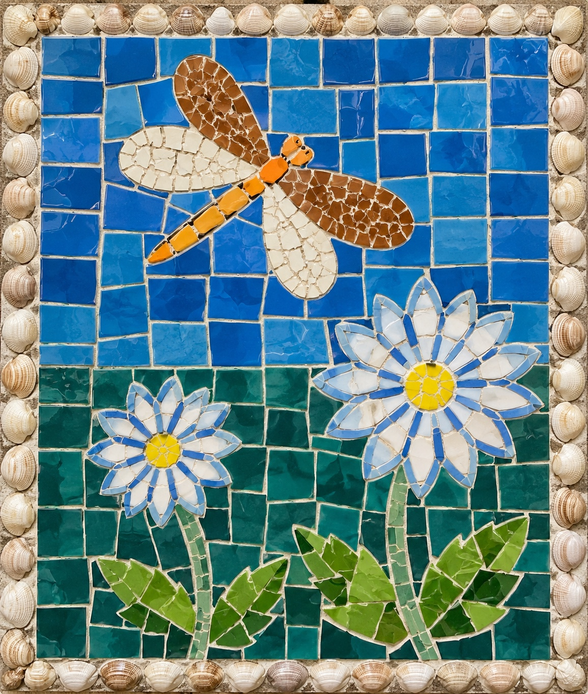

AKTIVITI 01 · 25 MARKAH
Bengkel Kepingan Mozek
Pilih warna pada palet, kemudian sentuh petak untuk mewarnakannya. Warnakan semua 12 petak untuk melengkapkan karya. Anda boleh menukar warna bila-bila masa.
Pilih warna
Tip seni: gabungkan warna panas dan sejuk, gunakan bentuk kepingan yang konsisten dan fikirkan titik tumpuan karya.

AKTIVITI 02 · 15 MARKAH
Kuiz Teknik Mozek
3 soalan · 5 markah setiap satu. Pilih satu jawapan bagi setiap soalan.
1. Apakah maksud teknik mozek?
2. Antara berikut, yang manakah boleh digunakan untuk menghasilkan mozek?
3. Apakah amalan yang sesuai ketika menghasilkan karya mozek?
AKTIVITI 03 · 10 MARKAH
Apresiasi Seni Visual
Lihat karya contoh. Perhatikan warna, bentuk kepingan, susunan dan kesan keseluruhan sebelum menjawab.
1. Unsur seni yang paling mudah diperhatikan dalam karya mozek berwarna-warni ialah...
2. Apabila warna dan kepingan disusun supaya karya kelihatan serasi, prinsip rekaan yang boleh diwujudkan ialah...
🏆🎨
Keputusan Studio Seni
0/50